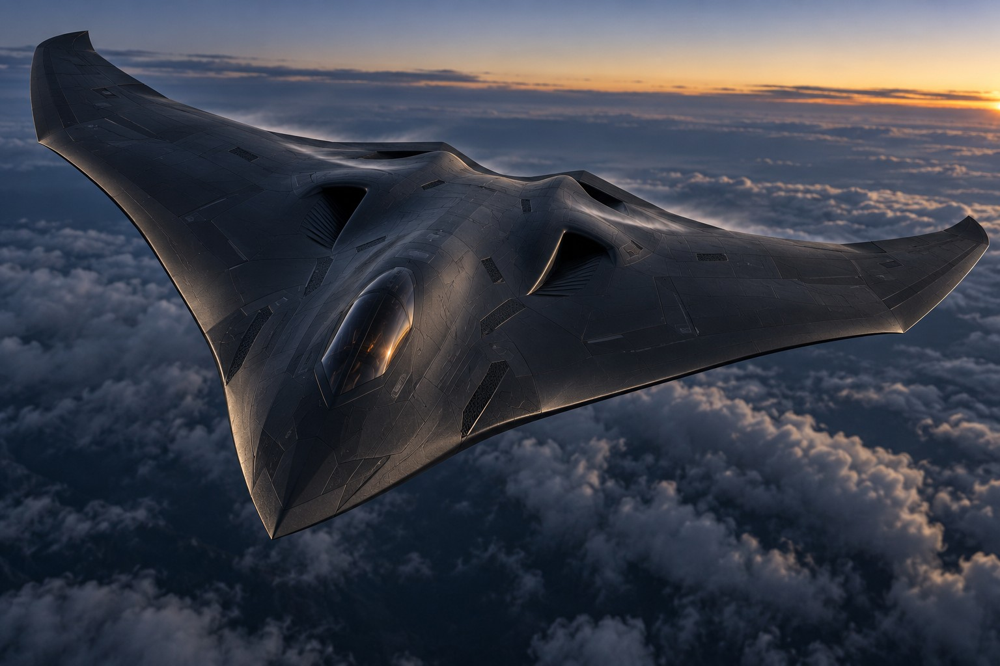

Release basis
Approval is evidence, not appearance.
The current analysis is a transparent preliminary screen. Flight release requires measured mass properties, aerodynamic model correlation, structural proof testing, ground-vibration and flutter clearance, instrumented propulsion testing, SITL/HITL fault injection, and independent signatures.
Structure
Two continuous carbon spars, closed torsion box, proof-load instrumentation and coupon allowables.
Control
Defined elevons, actuator margins, command limits and progressive manual-to-stabilized test cards.
Energy
Two isolated propulsion branches with independent fusing, containment, venting and logged thermal tests.
Verification
Traceable requirements, Monte Carlo campaigns, failure injection and configuration hashes.
Evidence index
Reviewer downloads
Conceptual exterior reference
X-91 visual direction
The supplied image establishes the intended blended-wing exterior language for the civilian, non-weaponized scale demonstrator. It is a presentation reference—not validated geometry, an aerodynamic result, or flight authorization.
Download reference image{kind=link}

Not a flight authorization
No document or calculation on this site grants airworthiness, regulatory permission, fabrication release, or approval to fly. All approval fields remain open until signed by qualified reviewers using measured test evidence.